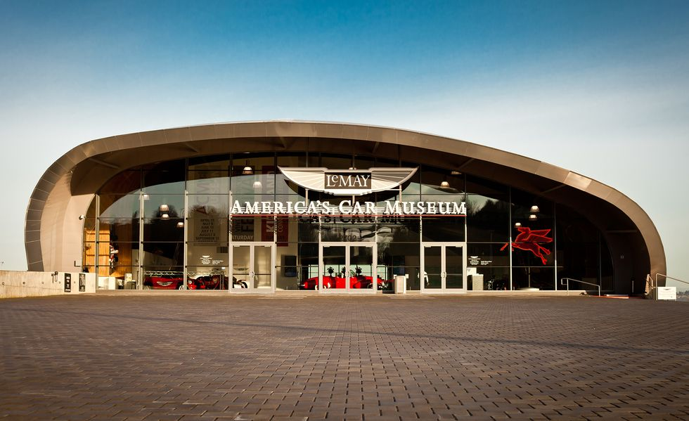
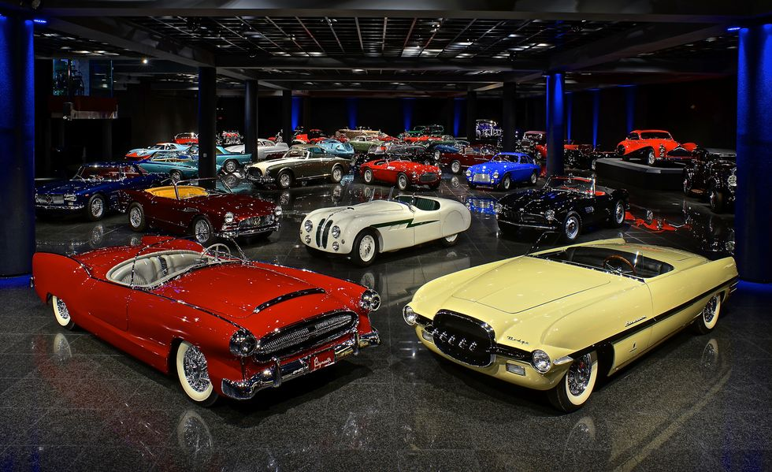
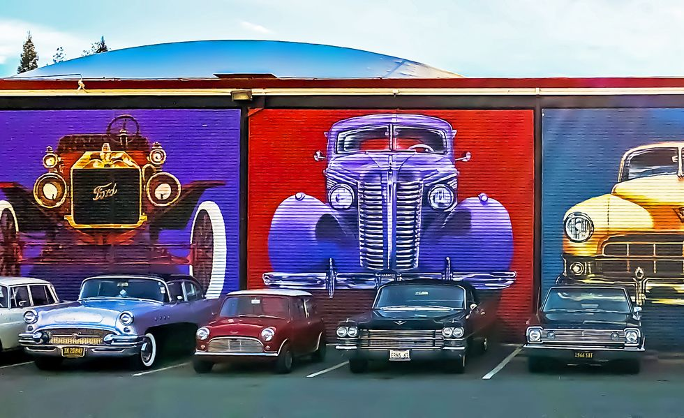

America's Car Museum | Tacoma, Washington

Home to the LeMay collection, which once contained an astounding 3000 vehicles, America's Car Museum lies south of
Seattle in Tacoma. The collection is quite diverse, including everything from a Peking-to-Paris Citroën 2CV and a
Duesenberg SJ to an '83 Mercury Colony Park. And for a measly three bucks extra, you can partake in the grand old
American tradition of slot-car racing on site!
Blackhawk Museum | Danville, California

Blackhawk is perhaps best known outside the Bay Area as the place where a down-on-his-luck Tim Armstrong picked up
donated microwaves and refrigerators before his band Rancid found success with "Salvation," a song detailing his time
manning a Salvation Army truck. But the ritzy enclave in the far East Bay community of Danville also is home to a
well-regarded museum with a heavy automotive component. Machines on display range from a 1911 Rolls-Royce Silver Ghost
to a 1958 Pininfarina-bodied Lancia Flaminia coupe to a '70 Dodge Challenger convertible.
California Auto Museum | Sacramento, California

Founded as the Towe Ford Museum in the 1980s, the California Automobile Museum has expanded its mission and collection
to embrace other marques. While the joint's still rather centered around American antiques, Malcolm Forbes's old
Lamborghini Countach resides there, as does a Kawasaki KZ1000P motorcycle from the TV show CHiPs. If you find yourself
in California's capital on the third Sunday of any given month, you can hitch a ride around town in a classic car from
the museum. Saoirse Ronan cosplay is completely optional.